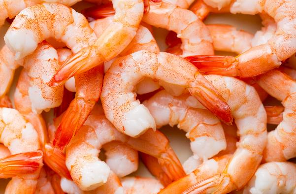

Activity 24: Pre-listening
Audio: Track 7
Look at the picture. Discuss the questions with your support person.

What are these?
Do you like eating them?
How often do you eat them?
How do you cook them?
Where do you buy them?
Are they popular in your home country?
Listen to this audio Track 7.
Answers
Look at the picture. Discuss the questions with your support person.
What are these?
Do you like eating them?
How often do you eat them?
How do you cook them?
Where do you buy them?
Are they popular in your home country?
Check with your teacher or support person.
Show transcript – Track 7
Assistant: What would you like?
Leyla: Oh hi. Yes. I’d like a kilo of prawns please.
Assistant: Green or cooked?
Leyla: How much are the green prawns?
Assistant: They’re $14.99 a kilo.
Leyla: OK. I’ll have the green prawns, please.
Assistant: OK. Anything else?
Leyla: No. That’s all. Thanks.
Assistant: Here you go. That’ll be $15.00.
Leyla: Can I use my card?
Assistant: Sure. Sign or pin?
Leyla: Pin…
Assistant: And here’s your receipt.
Leyla: Thanks. See ya.
Assistant: Bye.